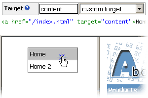

| CONTEXT HELP |
|---|
| Link Target |
|
 The name of the frame or window that linked resource (page) should be opened in. The menu will generate <a> tag and put the value of the target field in its target attribute. Anything accepted in <a target="..."> is also accepted in the target of the menu item. By default the link will be opened in the same frame or window (target="_self"). |